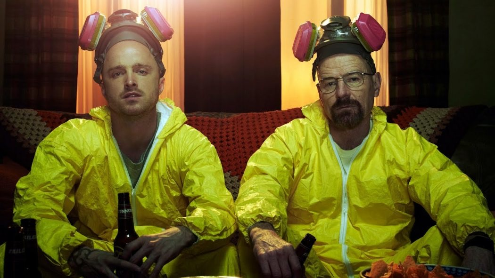
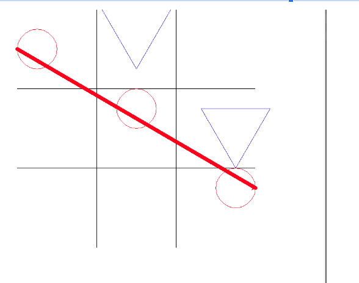
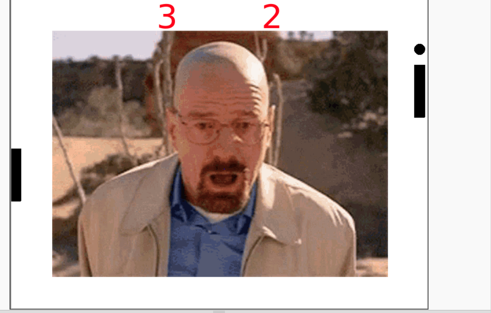
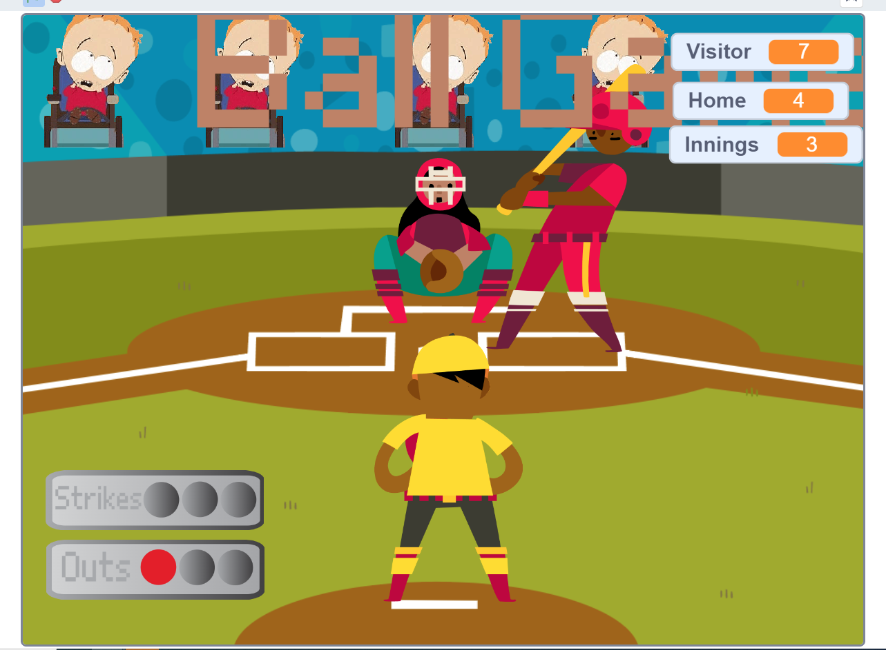

Home
Portfolio
About Me
This is my Portfolio Page!

Tic Tac Toe game

This is my tic tac toe game. We made a classic game of tic tac toe with a couple of modifications. We changed the shapes to circles and Triangles and made the colors blue and red. The game ends when someone connects three of their own shape or there is a draw.
Speed pong game

This is a game I made called Speed Pong. Speed pong is a two player game that is similar to regular pong but it speeds up with each hit. We also used different colors and a creative background. Try to hit your oppenents wall to gain a point.
Scratch Ball game

This is my Scratch Baseball game. It is a two player game that has different controls for the batter and the hitter. The batter can swing up down or middle and the pitcher can throw a curveball fastball or changeup. The game last 3 innings try to score more than your opponent!
3.2.4 Project

This is my 3.2.4 graph from the project. We investigated the honey production from multiple states across the United States. We found that the honey production in Alabama was actually decreasing.